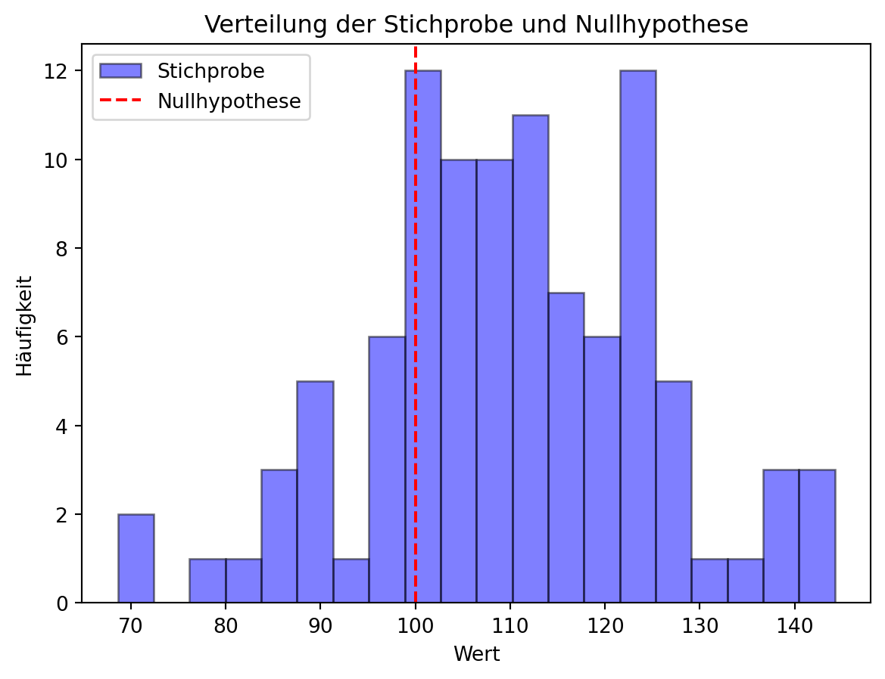
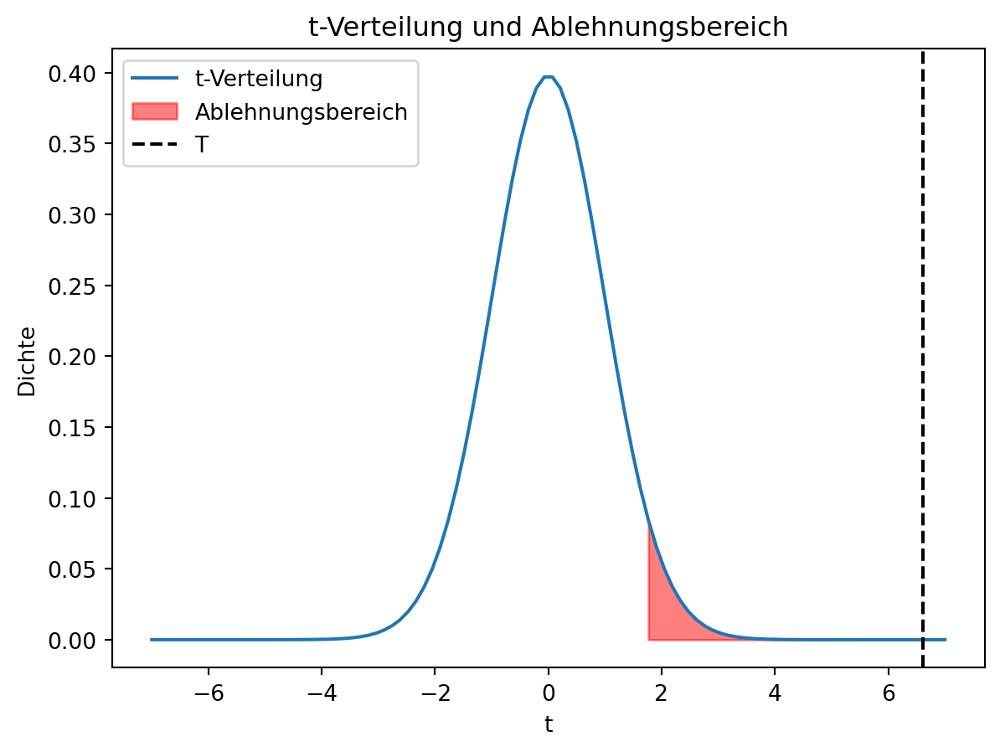
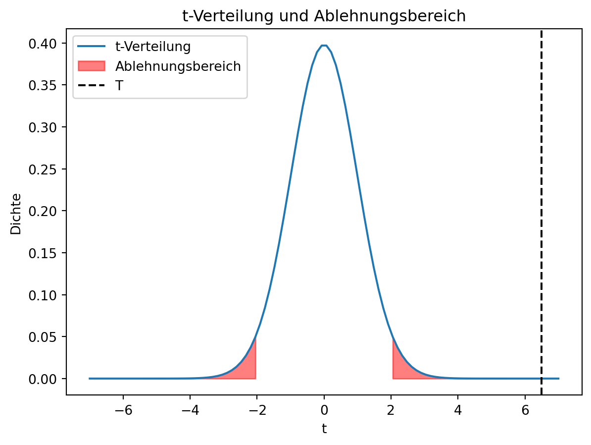

X_bar = np.mean(X)
s = np.std(X)
t = (X_bar - mu_0) / (s / np.sqrt(n))
print(f't = {t}')t = 7.464671125661238Nach dem zuvor beschreibenen Prinzip der Hypothesentests, gibt es verschiedene Tests, die auf unterschiedliche Fragestellungen zugeschnitten sind. In diesem Abschnitt werden einige dieser Tests vorgestellt.
Wir werden uns nur mit einigen typischen Tests beschäftigen. Es gibt noch viele weitere Tests, die auf spezielle Fragestellungen zugeschnitten sind. Die hier vorgestellten Tests sind jedoch die wichtigsten und werden in der Praxis am häufigsten verwendet.
Beim One-Sample Student’s T-Test wird die Mittelwert einer Stichprobe mit einem vorgegebenen Wert verglichen. Der Test wird verwendet, wenn die Varianz der Grundgesamtheit unbekannt ist.
Wir möchten den Typ I Fehler (\(\alpha\)) festlegen und dann sicherstellen, dass die Wahrscheinlichkeit, dass wir die Nullhypothese fälschlicherweise ablehnen, kleiner oder gleich \(\alpha\) ist.
Um zu beurteilen, wie wahrscheinlich die Stichprobe ist, wenn die Nullhypothese wahr ist, wird die Teststatistik \(t\) berechnet. Diese berechnet den Unterschied zwischen \(\bar{x}\) und \(\mu_0\) in Einheiten der Standardabweichung der Stichprobe. Wörtlich bedeutet die Teststatistik: Um wie viele Standardfehler unterscheidet sich der Stichprobenmittelwert \(\bar{x}\) vom vorgegebenen Wert \(\mu_0\).
\[ t = \frac{\bar{x} - \mu_0}{s / \sqrt{n}} \]
wobei \(\bar{x}\) der Stichprobenmittelwert, \(s\) die Stichprobenstandardabweichung und \(n\) die Stichprobengröße ist.
Die Teststatistik \(t\) folgt einer t-Verteilung mit \(n-1\) Freiheitsgraden.
Wenn die Teststatistik \(t\) größer ist als der kritische Wert \(t_{\alpha}\), dann lehnen wir die Nullhypothese ab. Der kritische Wert \(t_{\alpha}\) wird aus der t-Verteilungstabelle abgelesen.
# Hypothesentest
import numpy as np
from scipy.stats import norm
import matplotlib.pyplot as plt
import seaborn as sns
# Stichprobe der Mechatronikstudierenden
mu = 110
sigma = 15
# Nullhypothese
mu_0 = 100
# Stichprobe
n = 100
X = np.random.normal(mu, sigma, n)
# Schätzer für den Mittelwert und Standardabweichung
X_hat = np.mean(X)
mu_hat = np.std(X)
# Normale Verteilung aus der Schätzung
x = np.linspace(90, 130, 100)
# Plot der geschätzten Verteilung und Nullhypothese
plt.hist(X, bins=20, alpha=0.5, label='Stichprobe', color='blue', edgecolor='black')
plt.axvline(mu_0, color='r', linestyle='--', label='Nullhypothese')
plt.legend()
plt.title('Verteilung der Stichprobe und Nullhypothese')
plt.xlabel('Wert')
plt.ylabel('Häufigkeit')
plt.show()
X_bar = np.mean(X)
s = np.std(X)
t = (X_bar - mu_0) / (s / np.sqrt(n))
print(f't = {t}')t = 7.464671125661238from scipy.stats import t as t_table
alpha = 0.05
t_alpha = t_table.ppf(1 - alpha, n-1)
print(f't_alpha = {t_alpha}')t_alpha = 1.6603911559963895Dies können wir, wie folgt visualisieren:
x = np.linspace(-7, 7, 100)
y = t_table.pdf(x, n-1)
plt.plot(x, y, label='t-Verteilung')
plt.fill_between(x, 0, y, where=(x > t_alpha), color='red', alpha=0.5, label='Ablehnungsbereich')
plt.axvline(t, color='black', linestyle='--', label='T')
plt.legend()
plt.title('t-Verteilung und Ablehnungsbereich')
plt.xlabel('t')
plt.ylabel('Dichte')
plt.show()
Auf den ersten Blick kann es so wirken, als hätten wir eine Verteilung, um unsere Null-Hypothese gefittet, für die wir ja gar keine Daten haben (vgl. Beispiel im vorherigen Kapitel). Tatsächlich haben wird jedoch eine neue Zufallsvariable \(T\) definiert, die die Differenz zwischen dem Stichprobenmittelwert und dem Mittelwert der Nullhypothese in Einheiten der Standardabweichung der Stichprobe angibt. Diese Zufallsvariable \(T\) folgt einer t-Verteilung, die wir aus der Stichprobe berechnen können. Die Daten aus der Stichprobe können wir zum Fitten der Verteilung nutzen, da wir ja annehmen, dass alles was wird auf der Stichprobe basiert, auch auf der Grundgesamtheit basiert.
p_value = 1 - t_table.cdf(t, n-1)
print(f'p-value = {p_value}')p-value = 1.6505685707102202e-11Wir bezeichen dern Wert \(p\) als p-Wert. Der p-Wert gibt die Wahrscheinlichkeit an, dass wir die Nullhypothese fälschlicherweise ablehnen, wenn sie tatsächlich wahr ist. Je kleiner der p-Wert, desto unwahrscheinlicher ist es, dass wir die Nullhypothese fälschlicherweise ablehnen.
Wir sind bisher davon ausgegaben, dass die Intelligenz von Mechantronikstudierenden entweder gleich oder größer als der Durchschnitt ist. Deswegen, haben wir den Ablehnungsbereich nur für \(T > t_{\alpha}\) definiert und einen einseitigen Test durchgeführt. Wir könnten aber auch einen Studiengang untersuchen, über den wir weniger wissen. In diesem Fall, könnten wir auch einen zweiseitigen Test durchführen, der einen Ablehnungsbereich für \(T > t_{\alpha}\) und \(T < -t_{\alpha}\) definiert.
t_alpha = t_table.ppf(1 - alpha/2, n-1)
print(f't_alpha = {t_alpha}')t_alpha = 1.9842169515086827x = np.linspace(-7, 7, 100)
y = t_table.pdf(x, n-1)
plt.plot(x, y, label='t-Verteilung')
plt.fill_between(x, 0, y, where=(x > t_alpha), color='red', alpha=0.5, label='Ablehnungsbereich')
plt.fill_between(x, 0, y, where=(x < -t_alpha), color='red', alpha=0.5)
plt.axvline(t, color='black', linestyle='--', label='T')
plt.legend()
plt.title('t-Verteilung und Ablehnungsbereich')
plt.xlabel('t')
plt.ylabel('Dichte')
plt.show()
Die Rechte Grenze des Ablehnungsbereichs ist \(t_{\alpha} = 1.984\) wandert nun etwas nach rechts, da die Fläche unter der Kurve nun nur noch \(0.025\) beträgt. Wenn wir zweiseitig testen, testen wir also streger, da wir extremere Werte beobachten müssen, um die Nullhypothese abzulehnen.
Am Vorgehen ändert sich jedoch nichts. Wir berechnen die Teststatistik \(T\) und vergleichen sie mit den kritischen Werten \(t_{\alpha}\) und \(-t_{\alpha}\), die wird nun aber aus der zweiseitigen t-Verteilungstabelle ablesen.
X_bar = np.mean(X)
s = np.std(X)
t = (X_bar - mu_0) / (s / np.sqrt(n))
print(f't = {t}')t = 7.464671125661238Häufig ist man daran interessiert, ob sich die Mittelwerte zweier Stichproben unterscheiden. Auch in diesem Fall kann man einen T-Test einsetzen und die Teststatistik \(t\) berechnen (vgl. Fig. ?fig-sec-statistics-hypothesistests-two-sample-t-test)
Vorraussetzung ist jedoch, dass die Varianzen der beiden Stichproben gleich sind und die Stichproben unabhängig voneinander sind.
 {#fig-sec-statistics-hypothesistests-two-sample-t-test}
{#fig-sec-statistics-hypothesistests-two-sample-t-test}
Statt auf Gleichheit der Mittelwerte zu testen, könnte man auch auf einen bestimmten Unterschied \(\omega_0\) testen. In diesem Fall, würde die Nullhypothese \(H_0: \mu_1 - \mu_2 = \omega_0\) lauten. Die Teststatistik \(T\) würde dann wie folgt berechnet werden: \[ T = \frac{\bar{x}_1 - \bar{x}_2 - \omega_0}{s_p \sqrt{\frac{1}{n_1} + \frac{1}{n_2}}}. \]
Die Freiheitsgrade der t-Verteilung wären weiterhin \(n_1 + n_2 - 2\).
In manchen Fällen, haben wir zwei Stichproben, die nicht unabhängig voneinander sind. Ein Beispiel wäre, wenn wir ein Experiment haben, bei dem wir die gleiche Bauteil vor und nach einer Behandlung messen. In diesem Fall, können wir die Differenz der beiden Stichproben berechnen und dann einen One-Sample T-Test durchführen.
Zum Beispiel könnte man ein Verfahren zum Härten eines metallischen Bauteils untersuchen. Im Experiment würde man den Härtungsgrad vor und nach der Behandlung messen.
Tabelle: Härtungsgrad in HR (Rockwell) vor und nach der Behandlung
| 1 | 2 | 3 | 4 | 5 | 6 | 7 | 8 | 9 | 10 | |
|---|---|---|---|---|---|---|---|---|---|---|
| Vor der Behandlung | 49.1 | 49.2 | 49.3 | 49.4 | 49.5 | 49.6 | 49.7 | 49.8 | 49.0 | 50.0 |
| Nach der Behandlung | 50.2 | 50.3 | 50.3 | 50.2 | 50.7 | 50.7 | 50.8 | 50.9 | 51.0 | 51.1 |
| Differenz | 1.1 | 1.1 | 1.0 | 0.9 | 1.2 | 1.1 | 1.1 | 1.1 | 1.0 | 1.1 |
Die durchschnittliche Differenz der Stichproben beträgt \(\bar{d} = 1.07\) und die Standardabweichung der Differenz beträgt \(s_d = 0.08\). Wir könnten nun einen One-Sample T-Test durchführen, um zu testen, ob die Behandlung den Härtungsgrad signifikant erhöht.
import numpy as np
d = np.array([1.1, 1.1, 1.0, 0.9, 1.2, 1.1, 1.1, 1.1, 1.0, 1.1])
d_bar = np.mean(d)
s_d = np.std(d)
n = len(d)
print(f'd_bar = {d_bar}, s_d = {s_d}, n = {n}')
t = d_bar / (s_d / np.sqrt(n))
print(f't = {t}')d_bar = 1.0699999999999998, s_d = 0.07810249675906655, n = 10
t = 43.323033664571994::: {#0d413085 .cell .styled-output execution_count=10} ``` {.python .cell-code} from scipy.stats import t as t_table alpha = 0.05
t_alpha = t_table.ppf(1 - alpha, n-1) print(f’t_alpha = {t_alpha}’) ```
::: {.cell-output .cell-output-stdout} t_alpha = 1.8331129326536335 ::: :::
Nicht alle Test basieren auf der Normalverteilung oder einer T-Verteilung. Einige Schätzer folgen einer anderen Verteilung, wie z.B. der Chi-Quadrat(\(\mathcal{X}^2\))-Verteilung. Der Chi-Quadrat-Test ist ein statistischer Test, der für verschiedene Fragestellungen eingesetzt werden kann.
Der Chi-Quadrat-Test kann verwendet werden, um zu prüfen, ob zwei oder mehr Stichproben derselben Verteilung entstammen. Als Beispiel mit mechantronischem Anwendungsfall könnten wir die Qualität eines Lieferanten mit denen unserer bisherigen vergleichen. Wir können dabei die Häufigkeiten von OK-Teilen und verschiedenen Arten von Fehlern zählen und dann prüfen, ob der Lieferant die gleiche Qualität liefert.
| Lieferant | OK | Fehler 1 | Fehler 2 | Fehler 3 |
|---|---|---|---|---|
| A | 100 | 10 | 5 | 5 |
| Bisherige | 0.81 | 0.08 | 0.06 | 0.05 |
Wir können die beobachteten Häufigkeiten in einer Kontingenztafel darstellen und dann die erwarteten Häufigkeiten berechnen, wenn die beiden Lieferanten die gleiche Qualität liefern würden.
| Lieferant | OK | Fehler 1 | Fehler 2 | Fehler 3 | Summe |
|---|---|---|---|---|---|
| A (Observed) | 100 | 10 | 5 | 5 | 120 |
| Bisherige (Expected) | 97.2 | 9.6 | 7.2 | 6.0 | 120 |
import numpy as np
from scipy.stats import chi2
O = np.array([100, 10, 5, 5])
E = np.array([0.81, 0.08, 0.06, 0.05]) * np.sum(O)
print(f'O = {O}, E = {E}')
Z = np.sum((O - E)**2 / E)
print(f'Z = {Z}')O = [100 10 5 5], E = [97.2 9.6 7.2 6. ]
Z = 0.9362139917695469Die Chi-Quadrat-Verteilung ist asymmetrisch und hat eine hohe Wahrscheinlichkeit für Werte nahe 0. Abbildung ?fig-sec-statistics-hypothesistests-chi2-distribution zeigt die Chi-Quadrat-Verteilung und den Ablehnungsbereich für \(\alpha = 0.05\). Der Ablehnungsbereich ist rot markiert.
import seaborn as sns
import matplotlib.pyplot as plt
x = np.linspace(0, 20, 100)
y = chi2.pdf(x, 3)
plt.plot(x, y, label='Chi-Quadrat-Verteilung')
plt.fill_between(x, 0, y, where=(x > 7.815), color='red', alpha=0.5, label='Ablehnungsbereich')
plt.axvline(Z, color='black', linestyle='--', label='Z')
plt.legend()
plt.title('Chi-Quadrat-Verteilung und Ablehnungsbereich')
plt.xlabel('Z')
plt.ylabel('Dichte')
plt.show()
Anstelle einer Empirischen Grundgesamtheit, könnten wir auch eine bestimmte Verteilung annehmen und prüfen, ob die Daten dieser Verteilung entsprechen. In diesem Fall, würden wir die erwarteten Häufigkeiten basierend auf der angenommenen Verteilung berechnen und dann den Chi-Quadrat-Test durchführen.
Der Chi-Quadrat-Test kann auch verwendet werden, um zu prüfen, ob zwei Merkmale \(X\) mit \(m\) Kategorien und \(Y\) mit \(k\) Kategorien stochastisch unabhängig sind.
Hierzu kann man eine Kontingenztafel erstellen, die die Häufigkeiten der Kombinationen der beiden Merkmale enthält:
| \( Y_1 \) | \( Y_2 \) | \(\dots\) | \( Y_r \) | \( \sum \) | |
| \( X_1 \) | \( n_{11} \) | \( n_{12} \) | \(\dots\) | \( n_{1r} \) | \( n_{1.} \) |
| \( X_2 \) | \( n_{21} \) | \( n_{22} \) | \(\dots\) | \( n_{2r} \) | \( n_{2.} \) |
| \( \vdots \) | \( \vdots \) | \( \vdots \) | \( \ddots \) | \( \vdots \) | \( \vdots \) |
| \( X_m \) | \( n_{m1} \) | \( n_{m2} \) | \(\dots\) | \( n_{mr} \) | \( n_{m.} \) |
| \( \sum \) | \( n_{.1} \) | \( n_{.2} \) | \(\dots\) | \( n_{.r} \) | \( n \) |
Für die Zeilen und Spalten der Kontingenztafel werden die Randhäufigkeiten berechnet:
\[ n_{i.} = \sum_{j=1}^{r} n_{ij} \quad \text{und} \quad n_{.j} = \sum_{i=1}^{m} n_{ij} \]
Die erwarteten Häufigkeiten \(p_{ij}\) für jede Zelle der Kontingenztafel werden berechnet als das Produkt der Randhäufigkeiten geteilt durch die Gesamtanzahl der Beobachtungen:
\[ p_{ij} = \frac{n_{i.} \cdot n_{.j}}{n}, \]
und die relativen Randhäufigkeiten als
\[ p_{i.} = \frac{n_{i.}}{n} \quad \text{und} \quad p_{.j} = \frac{n_{.j}}{n}. \]
Aus den Rechenregeln der Wahrscheinlichkeit in Kapitel Chapter 3 folgt für unabhängige Ereignisse, dass die Wahrscheinlichkeit des gemeinsamen Eintretens der beiden Ereignisse gleich dem Produkt der Einzelwahrscheinlichkeiten ist:
\[ P(A \cap B) = P(A) \cdot P(B). \]
Für die Kontingenztafel bedeutet dies, dass die erwarteten Häufigkeiten \(p_{ij}\) gleich dem Produkt der Randhäufigkeiten \(p_{i.}\) und \(p_{.j}\) sind, wenn die beiden Merkmale unabhängig voneinander sind. Wenn dies für alle Zellen nahezu zutrifft, dann können wir die Nullhypothese annehmen, dass die beiden Merkmale unabhängig voneinander sind.
Die Testgröße \(\mathcal{X}^2\) wird dann berechnet als die Summe der quadrierten Differenzen zwischen beobachteten und erwarteten Häufigkeiten, normiert durch die erwarteten Häufigkeiten:
\[ \mathcal{X}^2 = \sum_{i=1}^{m} \sum_{j=1}^{r} \frac{(n_{ij} - p_{ij})^2}{p_{ij}}. \]
Die Testgröße \(\mathcal{X}^2\) folgt einer Chi-Quadrat-Verteilung mit \((m-1)(r-1)\) Freiheitsgraden.
Auf ähnliche Weise kann der Chi-Quadrat-Test auch verwendet werden, um zu prüfen, ob zwei oder mehr Stichproben derselben Verteilung bzw. einer homogenen Grundgesamtheit entstammen. In diesem Fall wird eine Kontingenztafel erstellt, die die Häufigkeiten der Kombinationen der Stichproben enthält. Die Testgröße \(\mathcal{X}^2\) wird dann berechnet als die Summe der quadrierten Differenzen zwischen beobachteten und erwarteten Häufigkeiten, normiert durch die erwarteten Häufigkeiten.
Der \(\mathcal{X}^2\)-Test funktionier auf der Basis von Häufigkeiten und ist daher nur für diskrete Daten geeignet. Der Kolmogorov-Smirnov-Test hingegen kann auch für kontinuierliche Daten verwendet werden. Der Kolmogorov-Smirnov-Test, kann z.B. angewendet werden, um zu prüfen ob,
Grundsätzlich setzen wir statischtische Tests ein, wenn wir eine Hypothese über eine Grundgesamtheit aufstellen und diese Hypothese auf Basis einer Stichprobe überprüfen wollen. Die Hypothese wird in eine Nullhypothese \(H_0\) und eine Alternativhypothese \(H_1\) aufgeteilt. Die Nullhypothese ist die Hypothese, die wir widerlegen wollen, während die Alternativhypothese die Hypothese ist, die wir annehmen, wenn die Nullhypothese widerlegt wird.
Test ermöglichen und zu unterschieden, ob die durch uns auf Grund der Stichprobe getroffene Aussage auf die Grundgesamtheit übertragbar oder möglicherweise nur Zufall sind.
{kind=link}